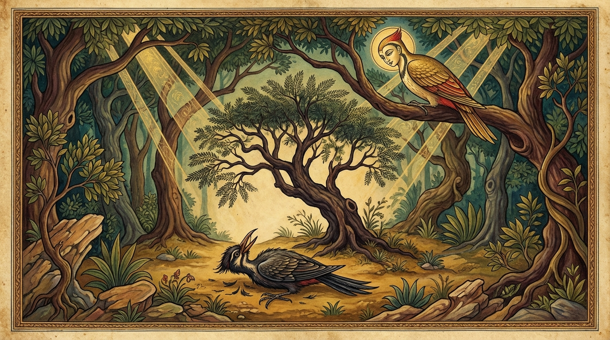

10. කන්දගලක ජාතකය (210)
“අම්භො කො නාමයං රුක්ඛො” (එම්බා! මේ කිනම් ගසක්ද?) යන මේ දේශනාව බුදුරජාණන් වහන්සේ වේළුවනාරාමයේ වැඩවාසය කරන සමයෙහි බුද්ධ ලීලාවක් අරභයා වදාළ සේක. එකල්හි බුදුරජාණන් වහන්සේ, “දේවදත්ත තෙරණුවෝ බුද්ධ විලාශය (බුදුරජාණන් වහන්සේ අනුකරණය) කළේය” යයි අසා, “මහණෙනි! දේවදත්ත තෙම මා අනුකරණය කරමින් විනාශයට පත්වූයේ දැන් පමණක් නොවේ. පෙරත් විනාශයට පැමිණියේය” යයි වදාරා අතීත කථාව ගෙනහැර දැක්වූ සේක.
පෙර බරණැස් නුවර බ්රහ්මදත්ත නම් රජු රාජ්යය කරන කල්හි බෝසතාණන් වහන්සේ හිමාලය ප්රදේශයේ ගස්වලට කොටන පක්ෂි (කෑරල) යෝනියෙහි උපත ලබා, කිහිරි වනයෙහිම ගොදුරු සොයා ගත්තේය. මොහුට ‘ඛදිරවනිය’ (කිහිරි වනයේ වසන්නා) යයි නමක් විය. ඔහුට එක් ‘කන්දගලක’ නම් යහලුවෙක් සිටියේය. හෙතෙම ඉඹුල් සහ එරබදු වනයෙහි ගොදුරු සොයා ගනියි. ඌ එක් දවසක් ඛදිරවනියගේ සමීපයට ගියේය. ඛදිරවනිය තම සහායකයා පැමිණියේ යයි සිතා කන්දගලක කැටුව කිහිරි වනයට පිවිස, කිහිරි කඳකට හොටෙන් පහරදී ගසෙන් පණුවන් පිටතට ගෙන දුන්නේය. කන්දගලක තමාට දුන් දුන් පණුවන් මිහිරි කැවුම් කන්නා සේ කඩ කඩා කෑවේය. මේ කද්දීම කන්දගලකට මාන්නයක් උපන්නේය. “මොහුත් ගස්වලට කොටන කුලයේම උපන්නෙකි. මමත් එසේය. එසේ තිබියදී මොහු විසින් දෙන ලද ගොදුරුවලින් මට කවර ප්රයෝජනයක්ද? මම තනිවම කිහිරි වනයෙහි ගොදුරු සොයා ගන්නෙමි” යි සිතා, හේ ඛදිරවනියට, “යහලුව! නුඹ වෙහෙස නොවන්න. මම ම කිහිරි වනයෙහිදී ගොදුරු සොයා ගන්නෙමි” යි කීවේය.
ඉක්බිති ඛදිරවනිය, කන්දගලකට, “යහලුව! නුඹ ඉඹුල්, එරබදු ආදී නිසරු (මෘදු) දැව ඇති වනයෙහි ගොදුරු ගන්නා කුලයෙහි උපන්නෙකි. කිහිරි නම් ගස් හටගත් අරටු ඇත්තේය. තදය. එය ඔබට රුචි නොවේවා (එපා)” යයි කීවේය. කන්දගලක, “දැන් මම ගස්වලට කොටන යෝනියෙහි උපන්නේ නොවෙම්ද?” යි ඔහුගේ වචනය නොසලකා වේගයෙන් ගොස් කිහිරි ගසකට හොටෙන් පහර දුන්නේය. එකෙණෙහිම කන්දගලකගේ හොට බිඳුනේය. ඇස් පිටතට නෙරා ගිය ආකාරයක් විය. හිස පැලුනේය. කන්දගලක ගසෙහි රැඳී සිටිනන්ට නොහැකිව බිම වැටී පළමු ගාථාව කීවේය.

“එම්බා! යම් ගසකට ගැසූ එක පහරින්ම මාගේ හිස බිඳී ගියේද, සියුම් කොළ ඇති, කටු සහිත මේ ගස කවරක්ද?”
එහි අම්භො කො නාමයං රුක්ඛො යනු “එම්බා ඛදිරවනිය! මේ කිනම් ගසක්ද?” යන්නයි. ‘කො නාම සො’ යනුද පාඨයකි. සින්නපත්තො යනු සියුම් කොළ ඇත්තේය. යත්ථ එකප්පහාරෙන යනු යම් ගසකට ගැසූ එකම පහරින්ම, උත්තමඞ්ගං විභිජ්ජිතං යනු හිස බිඳින ලද්දේය යන්නයි. හිස පමණක් නොව හොටයද කැඩුනේය. හෙතෙම වේදනාවට පත්වීම නිසා “මේ කිහිරි ගස කවර නම් ගසක්දැයි” දැන ගැනීමට නොහැකිව, වේදනාවෙන් මත්ව මෙම ගාථාවෙන් දෙඩවීය.
ඒ අසා ඛදිරවනිය දෙවන ගාථාව කීවේය.
“මේ පක්ෂියා අරටු නැති නිසරු ලී ඇති වනයන්හි (ගස්වලට) අනිමින් ඇවිද්දේය. පසුව හෙතෙම අරටු සහිත කිහිරි රුකට පැමිණියේය. යම් ගසකට ඇන ගුරුළා (පක්ෂියා) තම හිස පලා ගත්තේය.”
එහි අචාරි වතායං යනු ඒකාන්තයෙන්ම මොහු හැසිරුණේය. විතුදං වනානි යනු නිසරු ඉඹුල්, එරබදු ආදිය ඇති වනයන්හි ගස්වලට විදිමින් (කොටමින්) ය. කට්ඨඞ්ගරුක්ඛෙසු අසාරකෙසු යනු අරටු නැති නිසරු දැව ඇති ගස්වලය. අථාසදා ඛදිරං ජාතසාරං යනු පැල කාලයේ සිටම අරටු සහිත වූ කිහිරි ගස් වෙත පැමිණියේය. යත්ථබ්භිදා ගරුළො උත්තමඞ්ගං යනු යම් කිහිරි ගසක තම හිස හා හොට බිඳගත්තේය යන්නයි. මෙහි ගරුළො යනු පක්ෂියායි. මෙය සියලු කුරුල්ලන් සඳහා යෙදෙන ගෞරව සම්ප්රයුක්ත ආදරණීය වචනයකි.
මෙසේ ඛදිරවනිය ඌට, “එම්බා කන්දගලක! යම් ගසක නුඹේ හිස බිඳගත්තේද එය කිහිරි නම් වූ අරටු ගසකි” යයි කීවේය. ඔහු එහිම මරණයට පත් විය.
ශාස්තෲන් වහන්සේ මේ ධර්ම දේශනාව ගෙනහැර දක්වා ජාතක කථාව නිමවා වදාළ සේක. “එකල කන්දගලක නම් දේවදත්ත විය. ඛදිරවනිය වනාහි මම ම වූවෙමි.”
දසවැනි වූ කන්දගලක ජාතක වර්ණනාවයි.
සයවැනි වූ නතංදළ්හ වර්ගය නිමියේය.
එහි ජාතක නාමාවලිය (උද්දානය) මෙසේය:
- බන්ධනාගාර ජාතකය
- කෙළිසීල ජාතකය
- ඛණ්ඩහාල ජාතකය
- වීරක ජාතකය
- ගංගෙය්ය ජාතකය
- කුරුංගමිග ජාතකය
- මස්සක ජාතකය
- සුසුමාර ජාතකය
- කුක්කුට ජාතකය
- කන්දගලක ජාතකය
යන මෙකී ජාතක දසයයි.